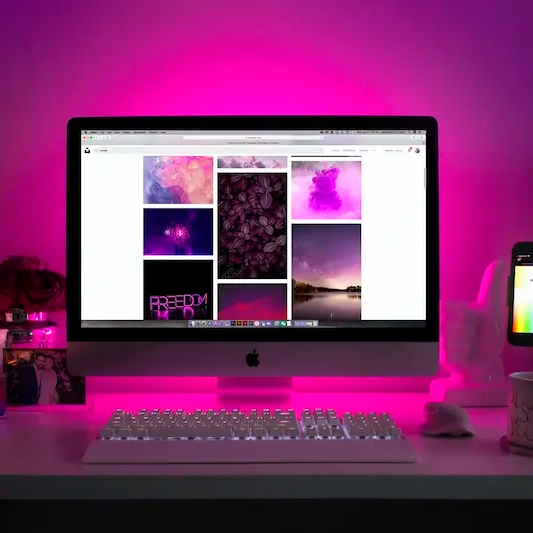

Computere
Et site om computeren med alt fra dens historie til dens specifikationer og mine personlige præferencer, når det gælder computere og computerudstyr. Okay. Nu kommer der lige et stykke tekst, der måske ikke giver så meget mening, men jeg syntes, at siden trængte til lidt mere tekst. Here we go! Mit navn er Ida Krahl. Det er mig, der har lavet denne side om computere. Jeg skriver lige lidt om mig selv, så du som læser kan få et lille indblik i hvem der står bag denne side. Jeg er 24 år. De første 19 år af mit liv boede jeg på Bornholm. Det var skønt, men det er nu også dejligt, at være flyttet til en by hvor der sker lidt mere. Til gengæld nyder jeg at besøge Bornholm i mine ferier. Jeg føler, at det er nemmere at slappe af og trække vejret dybt ned i maven, når jeg er på Bornholm. Måske er det barndommens minder. Måske er det den friske luft. Who knows? Anyways, nu bor jeg på Amager, hvilket er meget anderledes. Anderledes på en god måde heldigvis. Så ja! Fra Solskinsøen til Lorteøen. Livet er en sjov størrelse. Håber, du nød dette lille stykke tekst.
Stats
Ni ud af ti familier ejer i 2022 en eller flere smartphones, mens knap seks ud af ti familier har en tablet-pc liggende. Hele 94 procent ejer en personlig computer, hvoraf fire ud af ti anvender Windows som deres primære operativsystem.
- Personlig computer
- 94%
- Windows
- 40%
- Tablet
- 56%
- Smartphone
- 93%